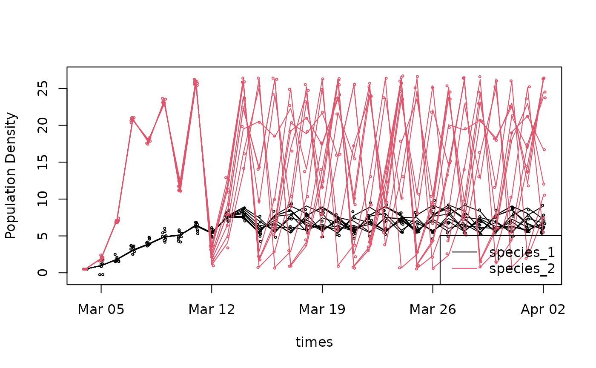

Example metadata for a Lotka-Volterra population growth forecast
logistic-metadata-example.RmdCode
A simple, example forecast of population growth of two interacting species
========================================================
Generating the forecast
To illustrate the application of the forecast standard, we’ll consider the classic Lotka-Volterra population growth model. To keep this first example simple, we’ll only consider two species and two uncertainties - an additive process error, which converts this to a stochastic Lotka-Volterra, and an observation error. We’ll propagate uncertainty by running multiple ensembles. To illustrate the ability of the output format to accommodate spatial dimensions, we’ll run the model at multiple depths in a water column (e.g. lake or ocean) but those depths are not interacting – we know this isn’t realistic, but we want to keep things simple. Overall, this gives us the following dimensions
Code
R
forecast_start_time = as.Date("2001-03-04") ## start date of our forecast
n_time <- 30
times = seq(from=forecast_start_time,by="1 day",length=n_time)
depths <- c(1, 3, 5)
n_depths <- length(depths)
n_ensembles <- 10
ensembles <- seq_len(n_ensembles)
species <- c("species_1","species_2")
n_species <- length(species)
obs_dim <- 2 ## 1 = latent state
## 2 = latent state + observation errorPython
forecast_start_time = datetime.date(2001, 3, 4)
n_time = 30
times = [forecast_start_time + datetime.timedelta(days = x) for x in range(n_time)]
depths = [1, 3, 5]
n_depths = len(depths)
n_ensembles = 10
ensembles = list(range(n_ensembles))
species = ["species_1", "species_2"]
n_species = len(species)
obs_dim = 2 ## 1 = latent state, 2 = latent_state + observation errorNext we’re going to assume fixed parameters and initial conditions, set up storage for our forecast output (which we see has 5 dimensions), and then forward simulate the populations
Code
R
## parameters for species_1 and species_2
r <- c(1, 3)
K <- c(10, 20)
alpha <- c(0.2, 0.3)
## process error
process_sd <- 0.01
## observation error
obs_sd <- c(0.5,0.2)
## initial conditions
n0 <- 0.5
## forecast output storage
n <- array(NA,dim = c(n_time, n_depths, n_ensembles, obs_dim,2)) ## last dim is species
n[1,,,,] <- n0
## forecast flag
forecast <- rep(as.integer(0), n_time) ## this code indicated a hindcast
## data assimilation flag
data_assimilation <- rep(as.integer(0), n_time) ## this code indicates a 'free-run' that didn't assimilate new data
## forward simulation
for(t in 2:n_time){
for(depth in 1:n_depths){
for(ens in 1:n_ensembles){
## predict latent state
n_curr <- n[t-1,depth,ens,1,] ## current state
n[t, depth, ens,1,1] <- n_curr[1] +
r[1]*n_curr[1]*(1-((n_curr[1] +
alpha[1]*n_curr[2])/K[1])) + rnorm(1, 0, process_sd)
n[t, depth, ens,1,2] <- n_curr[2] +
r[2]*n_curr[2]*(1-((n_curr[2] +
alpha[2]*n[1])/K[2])) + rnorm(1, 0, process_sd)
## predict observed values
n[t,depth,ens,2,] = rnorm(2,n[t,depth,ens,1,],obs_sd)
}
}
}Python
r = [1, 3]
K = [10, 20]
alpha = [0.2, 0.3]
process_sd = 0.01
obs_sd = [0.5, 0.2]
n0 = 0.5
n = np.zeros((n_time, n_depths, n_ensembles, obs_dim, n_species))
n[0,:,:,:,:] = n0
forecast = np.zeros((n_time), dtype=int)
data_assimilation = np.zeros((n_time), dtype=int)
for t in range(1, n_time):
for depth in range(n_depths):
for ens in range(n_ensembles):
# predict latent state
n_curr = n[t-1,depth,ens,0,:]
n[t, depth, ens, 0, 0] = n_curr[0] + \
r[0] * n_curr[0] * \
(1 - ((n_curr[0] + alpha[0]*n_curr[1]) / K[0])) + \
np.random.randn(1) * process_sd
n[t, depth, ens, 0, 1] = n_curr[1] + \
r[1] * n_curr[1] * \
(1 - ((n_curr[1] + alpha[1]*n_curr[0]) / K[1])) + \
np.random.randn(1) * process_sd
# predict observed values
n[t,depth,ens,1,:] = n[t,depth,ens,0,:] + np.random.randn(2) * obs_sdHere’s a simple visualization of our ensemble forecast at one depth
Code
R
plot(times,n[,1,1,1,1],ylim=range(n),ylab="Population Density",type='l')
for(s in seq_along(species)){ ##species
for(e in ensembles){
lines(times,n[,1,e,1,s],col=s) ## latent
points(times+runif(n_time,-0.12,0.12),n[,1,e,2,s],col=s,cex=0.35) ## pseudo-obs w/ jitter
}
}
legend("bottomright",legend=species,col = seq_along(species),lty = 1)
Python
plt.plot(times, n[:,0,0,0,0], "-")
colors = ["r", "b"]
for s in range(n_species):
for e in range(n_ensembles):
plt.plot(times, n[:,0,e,0,s], "-", color=colors[s])
plt.plot(times, n[:,0,e,1,s], "+", color=colors[s])
leg_lines = [plt.Line2D([0], [0], color=colors[x]) for x in range(n_species)]
leg_labs = [f"Species {x}" for x in range(n_species)]
plt.legend(leg_lines, leg_labs)
plt.xlabel("Time")
plt.ylabel("Population Density")
plt.show()
Saving to a standardized output format
Standard Option 1: netCDF
Forecast identifiers
Because netCDF is a self-documenting format we’re going to start by defining some forecast identifiers (which we’ll also later use in the metadata)
forecast_project_id identifies forecasts coming from a
single project and is used to link forecasts different model versions.
Examples might include a project Github repository or a team name.
forecast_model_id is updated each time the forecast code
is modified (e.g. model structure, model calibration, forecast
workflow). Examples might be a DOI, version number, or Github hash.
Results from a single forecast_model_id are considered comparable.
forecast_iteration_id represents a unique ID for each
forecast run. Examples might be a start time or database ID.
For example, if you have a forecast code base on GitHub and launch a forecast from that code that runs daily for 365 days, then there will be one forecast_project_id and 365 forecast_iteration_ids. A paper analyzing the forecasts would cite the forecast_project_id.
Code
netcdf Dimensions
Once we have our ID’s defined, we’re going to use
ncdim_def to define the dimensions that our output
variables will have
Code
R
## Set dimensions
timedim <- ncdim_def("time", ## dimension name
units = paste('days since',forecast_start_time),
## size of timestep, with units and start date
vals = as.numeric(times - forecast_start_time),
## sequence of values that defines the dimension.
## netCDF expresses time dimensions relative to a
## specified start date, in this case forecast_start_time
longname = 'time')
## descriptive name
depthdim <- ncdim_def("depth",
units = "meters",
vals = depths,
longname = 'Depth from surface')
parmdim <- ncdim_def("parameter",
units = "",
vals = ensembles,
longname = 'ensemble member')
obsdim <- ncdim_def("obs_flag",
units = "",
vals = 1:obs_dim,
longname = "observation error flag. 1 = latent state, 2 = w/ obs error")
## quick check that units are valid
udunits2::ud.is.parseable(timedim$units)## [1] TRUE
udunits2::ud.is.parseable(depthdim$units)## [1] TRUE
udunits2::ud.is.parseable(parmdim$units)## [1] TRUE
udunits2::ud.is.parseable(obsdim$units)## [1] TRUEPython
Note that unlike R, the Python interface expects us to create the output NetCDF file first before populating it with output.
ncfile = tempfile.NamedTemporaryFile(suffix=".nc")
ncout = netCDF4.Dataset(ncfile.name, mode='w')
timedim = ncout.createDimension("time", n_time)
timevar = ncout.createVariable("time", "f4", "time")
timevar.units = f"days since {forecast_start_time}"
timevar[:] = [(t - forecast_start_time).days for t in times]
depthdim = ncout.createDimension("depth", n_depths)
depthvar = ncout.createVariable("depth", "f4", "depth")
depthvar.units = "meters"
depthvar[:] = depths
parmdim = ncout.createDimension("parameter", n_ensembles)
parmvar = ncout.createVariable("parameter", "i4", "parameter")
parmvar.units = ""
parmvar[:] = ensembles
obsdim = ncout.createDimension("obs_flag", obs_dim)
obsvar = ncout.createVariable("obs_flag", "i4", "obs_flag")
obsvar.units = ""
obsvar[:] = list(range(obs_dim))Variable names
Once we’ve defined our dimensions, we can then define the metadata
about our variables using ncvar_def
Code
R
fillvalue <- 1e32 ## missing data value
#Define variables
def_list <- list()
def_list[[1]] <- ncvar_def(name = "species_1",
units = "number of individuals",
dim = list(timedim, depthdim, parmdim, obsdim),
missval = fillvalue,
longname = '<scientific name of species 1>',
prec="single")
def_list[[2]] <- ncvar_def(name = "species_2",
units = "number of individuals",
dim = list(timedim, depthdim, parmdim, obsdim),
missval = fillvalue,
longname = '<scientific name of species 2>',
prec="single")
def_list[[3]] <- ncvar_def(name = "forecast",
units = "integer",
dim = list(timedim),
missval = fillvalue,
longname = 'EFI standard forecast code. 0 = hindcast',
prec="single")
def_list[[4]] <- ncvar_def(name = "data_assimilation",
units = "integer",
dim = list(timedim),
missval = fillvalue,
longname = 'EFI standard data assimilation code. 0 = no data',
prec="single")Python
spp1nc = ncout.createVariable("species_1", "f4", ("time", "depth", "parameter", "obs_flag"))
spp1nc.units = "number of individuals"
spp1nc.longname = "<scientific name of species 1>"
spp2nc = ncout.createVariable("species_2", "f4", ("time", "depth", "parameter", "obs_flag"))
spp2nc.units = "number of individuals"
spp2nc.longname = "<scientific name of species 2>"
forecastnc = ncout.createVariable("forecast", "i4", ("time"))
forecastnc.units = "integer"
forecastnc.longname = "EFI standard forecast code. 0 = hindcast"
danc = ncout.createVariable("data_assimilation", "i4", ("time"))
danc.units = "integer"
danc.longname = "EFI standard data assimilation code. 0 = no data"Creating the file
Finally, we’ll now create our netCDF file and add our outputs and global metadata to the file
Code
R
## file name
ncfname <- "logistic-forecast-ensemble-multi-variable-space-long.nc"
## open your netCDF file
ncout <- nc_create(ncfname,def_list,force_v4=T)
## fill in our output data
ncvar_put(ncout,def_list[[1]] , n[, , , ,1 ]) ## species 1
ncvar_put(ncout,def_list[[2]] , n[, , , ,2 ]) ## species 2
ncvar_put(ncout,def_list[[3]] , forecast) ## forecast flag
ncvar_put(ncout,def_list[[4]] , data_assimilation) ## data_assimilation flag
## Global attributes (metadata)
ncatt_put(ncout,0,"forecast_project_id", as.character(forecast_project_id),
prec = "text")
ncatt_put(ncout,0,"forecast_model_id",as.character(forecast_model_id),
prec = "text")
ncatt_put(ncout,0,"forecast_iteration_id",as.character(forecast_iteration_id),
prec = "text")
nc_close(ncout) ## make sure to close the filePython
Recall: We already created the file above.
# Write data to file
spp1nc[:,:,:,:] = n[:,:,:,:,0]
spp2nc[:,:,:,:] = n[:,:,:,:,1]
forecastnc[:] = forecast
danc[:] = data_assimilation
# Set global attributes (metadata)
ncout.forecast_project_id = forecast_project_id
ncout.forecast_model_id = forecast_model_id
ncout.forecast_iteration_id = forecast_iteration_id
ncout.close()Standard Option 2: ensemble CSV
Convert to a flat file format (CSV) with one column for each variable and all ensemble members saved
Code
R
## wrangle data from an array into a long format
df_combined <- reshape2::melt(n,varnames=c("time","depth","parameter","obs_flag","species")) %>%
pivot_wider(id_cols = 1:4,names_from = "species",names_prefix = "species_",values_from = "value") %>%
pivot_longer(cols = starts_with("species"),names_to = "variable",values_to = "prediction") %>%
mutate(time = times[time]) %>%
mutate(depth = depths[depth]) %>%
right_join(tibble(time=times,forecast=forecast,data_assimilation = data_assimilation))## Joining, by = "time"
head(df_combined,n=10)## # A tibble: 10 × 8
## time depth parameter obs_flag variable prediction forecast
## <date> <dbl> <int> <int> <chr> <dbl> <int>
## 1 2001-03-04 1 1 1 species_1 0.5 0
## 2 2001-03-04 1 1 1 species_2 0.5 0
## 3 2001-03-05 1 1 1 species_1 0.984 0
## 4 2001-03-05 1 1 1 species_2 1.95 0
## 5 2001-03-06 1 1 1 species_1 1.82 0
## 6 2001-03-06 1 1 1 species_2 7.16 0
## 7 2001-03-07 1 1 1 species_1 3.04 0
## 8 2001-03-07 1 1 1 species_2 20.8 0
## 9 2001-03-08 1 1 1 species_1 3.88 0
## 10 2001-03-08 1 1 1 species_2 17.8 0
## # … with 1 more variable: data_assimilation <int>
write.csv(df_combined,
file = "logistic-forecast-ensemble-multi-variable-multi-depth.csv")Python
** this code needs updating for the new format**
n_names = ["time", "depth", "ensemble", "obs_flag", "species"]
n_index = pd.MultiIndex.from_product([range(s) for s in n.shape], names=n_names)
df = pd.DataFrame({"pop": n.flatten()}, index = n_index)["pop"]
df_wide = df.unstack("species").reset_index()
df_wide["time"] = [times[x] for x in df_wide["time"]]
df_wide["depth"] = [depths[x] for x in df_wide["depth"]]
df_wide.rename(columns={0: "Species_1", 1: "Species_2"}, inplace=True)
meta_df = pd.DataFrame({"time": times, "forecast": forecast, "data_assimilation": data_assimilation})
df_combined = df_wide.merge(meta_df, on="time", how="right")
df_combined.head()## time depth ensemble ... Species_2 forecast data_assimilation
## 0 2001-03-04 1 0 ... 0.5 0 0
## 1 2001-03-04 1 0 ... 0.5 0 0
## 2 2001-03-04 1 1 ... 0.5 0 0
## 3 2001-03-04 1 1 ... 0.5 0 0
## 4 2001-03-04 1 2 ... 0.5 0 0
##
## [5 rows x 8 columns]out_csv = tempfile.NamedTemporaryFile(suffix=".csv")
df_combined.to_csv(out_csv.name)Standard Option 3: distributional CSV
Convert to a flat file format (CSV) with forecast distributions saved
Code
R
## calculate summary statistics across ensemble members and output variables
dfs <- df_combined %>% add_column(family="normal") %>%
group_by(time, depth,family,obs_flag,variable,forecast,data_assimilation) %>%
summarize(mu = mean(prediction),
sigma = sd(prediction)) %>%
pivot_longer(8:9,names_to="parameter",values_to = "predictions") %>%
relocate(parameter,.after = family) %>%
relocate(predictions,.after=variable)## `summarise()` has grouped output by 'time', 'depth', 'family', 'obs_flag',
## 'variable', 'forecast'. You can override using the `.groups` argument.
head(dfs,n=10)## # A tibble: 10 × 9
## # Groups: time, depth, family, obs_flag, variable, forecast [5]
## time depth family parameter obs_flag variable predictions forecast
## <date> <dbl> <chr> <chr> <int> <chr> <dbl> <int>
## 1 2001-03-04 1 normal mu 1 species_1 0.5 0
## 2 2001-03-04 1 normal sigma 1 species_1 0 0
## 3 2001-03-04 1 normal mu 1 species_2 0.5 0
## 4 2001-03-04 1 normal sigma 1 species_2 0 0
## 5 2001-03-04 1 normal mu 2 species_1 0.5 0
## 6 2001-03-04 1 normal sigma 2 species_1 0 0
## 7 2001-03-04 1 normal mu 2 species_2 0.5 0
## 8 2001-03-04 1 normal sigma 2 species_2 0 0
## 9 2001-03-04 3 normal mu 1 species_1 0.5 0
## 10 2001-03-04 3 normal sigma 1 species_1 0 0
## # … with 1 more variable: data_assimilation <int>
write.csv(dfs, file = "logistic-forecast-summary-multi-variable-multi-depth.csv")Python
keep_cols = [col for col in df_combined.columns if not "Species" in col]
df_long = df_combined.melt(id_vars=keep_cols, var_name="species")
dfs_wide = df_long\
.groupby(["time", "depth", "obs_flag", "species", "forecast", "data_assimilation"])\
.agg(
mean = ("value", np.mean), sd = ("value", np.std),
Conf_interv_025 = ("value", lambda x: np.quantile(x, 0.025)),
Conf_interv_975 = ("value", lambda x: np.quantile(x, 0.975)),
)\
.reset_index()\
.melt(
id_vars = ["time", "depth", "obs_flag", "forecast",
"data_assimilation", "species"],
value_vars = ["mean", "sd", "Conf_interv_025", "Conf_interv_975"],
var_name = "statistic"
)
dfs = dfs_wide.pivot(
index = ["time", "depth", "obs_flag", "forecast",
"data_assimilation", "statistic"],
columns="species",
values = "value"
).reset_index()
dfs.head()## species time depth obs_flag ... statistic Species_1 Species_2
## 0 2001-03-04 1 0 ... Conf_interv_025 0.5 0.5
## 1 2001-03-04 1 0 ... Conf_interv_975 0.5 0.5
## 2 2001-03-04 1 0 ... mean 0.5 0.5
## 3 2001-03-04 1 0 ... sd 0.0 0.0
## 4 2001-03-04 1 1 ... Conf_interv_025 0.5 0.5
##
## [5 rows x 8 columns]out_summary = tempfile.NamedTemporaryFile(suffix=".csv")
dfs.to_csv(out_summary.name)Standardized Metadata
Forecast output entity: dataTable
Let’s begin by documenting the metadata of the forecast output data
table itself, which we’ll do using EML’s dataTable entity.
In this example we’ll assume we’re working with format 2 (ensemble CSV),
though most of the metadata would be identical for all three
formats.
To start, the attributes table stores the basic metadata
about the variable names and units.
Code
R
## define variable names, units, etc
## in practice, this might be kept in a spreadsheet
attributes <- tibble::tribble(
~attributeName, ~attributeDefinition, ~unit, ~formatString, ~numberType, ~definition,
"time", "[dimension]{time}", "year", "YYYY-MM-DD", "numberType", NA,
"depth", "[dimension]{depth in reservior}", "meter", NA, "real", NA,
"ensemble", "[dimension]{index of ensemble member}", "dimensionless", NA, "integer", NA,
"obs_flag", "[dimension]{observation error}", "dimensionless", NA, "integer", NA,
"species_1", "[variable]{Pop. density of species 1}", "numberPerMeterSquared", NA, "real", NA,
"species_2", "[variable]{Pop. density of species 2}", "numberPerMeterSquared", NA, "real", NA,
"forecast", "[flag]{whether time step assimilated data}", "dimensionless", NA, "integer", NA,
"data_assimilation", "[flag]{whether time step assimilated data}", "dimensionless", NA, "integer", NA
)
## note: EML uses a different unit standard than UDUNITS. For now use EML. EFI needs to provide a custom unitList.
attributes## # A tibble: 8 × 6
## attributeName attributeDefinition unit formatString numberType definition
## <chr> <chr> <chr> <chr> <chr> <lgl>
## 1 time [dimension]{time} year YYYY-MM-DD numberType NA
## 2 depth [dimension]{depth … meter NA real NA
## 3 ensemble [dimension]{index … dime… NA integer NA
## 4 obs_flag [dimension]{observ… dime… NA integer NA
## 5 species_1 [variable]{Pop. de… numb… NA real NA
## 6 species_2 [variable]{Pop. de… numb… NA real NA
## 7 forecast [flag]{whether tim… dime… NA integer NA
## 8 data_assimilation [flag]{whether tim… dime… NA integer NA
attrList <- set_attributes(attributes,
col_classes = c("Date", "numeric", "numeric","numeric",
"numeric","numeric", "numeric","numeric"))Note that the EFI standard extends the EML
attibuteDefinition to include a [variable_type] and
{variable_definition}. The options for [variable_type] include: *
dimension * variable = output variable * diagnostic = variable output
purely for diagnostic purposes * observation = data that is or could be
compared to an output_variable * obs_error * flag * initial_condition *
driver * parameter * random_effect * process_error
We then link the attribute information with the info about a particular file
Code
R
## sets metadata about the file itself (name, file type, size, MD5, etc)
physical <- set_physical("logistic-forecast-ensemble-multi-variable-multi-depth.csv",
recordDelimiter='\n')## Automatically calculated file size using file.size("logistic-forecast-ensemble-multi-variable-multi-depth.csv")## Automatically calculated authentication size using digest::digest("logistic-forecast-ensemble-multi-variable-multi-depth.csv", algo = "md5", file = TRUE)
## set metadata for the file as a whole
dataTable <- eml$dataTable(
entityName = "forecast", ## this is a standard name to allow us to distinguish this entity from
entityDescription = "Forecast of population size using a depth specific model",
physical = physical,
attributeList = attrList)Here entityName = "forecast" is a standard name within
the EFI standard to allow us to distinguish this entity from metadata
about parameters, drivers, etc.
There’s a lot more optional terminology that could be exploited here
– for instance, the specification lets us define different missing value
codes (and explanations) for each column, and allows us to indicate
precision, minimum and
maximum.
Note that physical type can document almost any formats
as well, including NetCDF etc. A NetCDF file would still document the
variables measured in much the same way regardless of the underlying
representation.
Provenance
Now that we’ve documented the actual data.frame itself, we can add additional metadata to the record describing our forecast, which is essential for citing, discovering, and interpreting the result. We start with some authorship information.
Coverage
Set Taxonomic, Temporal, and Geographic Coverage. (Look, apparently we’re modeling population densities of Gloeotrichia echinulata and Anabaena circinalis cyanobacterium in Lake Sunapee, NH, USA)
Code
R
taxa <- tibble::tribble(
~Genus, ~Species,
"Gloeotrichia", "echinulata",
"Anabaena", "circinalis")
coverage <-
set_coverage(begin = first(times),
end = last(times),
sci_names = taxa,
geographicDescription = "Lake Sunapee, NH, USA ",
west = -72.15, east = -72.05,
north = 43.48, south = 43.36)Abstract
Our dataset needs an abstract describing what this is all about.
Code
R
abstract_text <- system.file("extdata", "abstract.md", package="EFIstandards", mustWork = TRUE)Dataset
Next, we’ll combine these various bits to document the output dataset as a whole
Code
R
dataset = eml$dataset(
title = "A very simple Lotka-Volterra forecast",
creator = me,
contact = list(references="https://orcid.org/0000-0003-1282-7825"),
pubDate = forecast_start_time,
intellectualRights = "http://www.lternet.edu/data/netpolicy.html.",
abstract = "An illustration of how we might use EML metadata to describe an ecological forecast",
dataTable = dataTable,
keywordSet = keywordSet,
coverage = coverage
)Forecast-specific additionalMetadata
The EFI standard is using EML’s additionalMetadata
capacity. Section 2.1 of the EFI standard describes both the basic
elements (2.1.1) and the info about model structure and uncertainty
(2.1.2).
Code
R
additionalMetadata <- eml$additionalMetadata(
metadata = list(
forecast = list(
## Basic elements
timestep = "1 day", ## should be udunits parsable; already in coverage -> temporalCoverage?
forecast_horizon = "30 days",
forecast_start_time = forecast_start_time,
forecast_issue_time = Sys.time(),
forecast_iteration_id = forecast_iteration_id,
forecast_project_id = forecast_project_id,
metadata_standard_version = "0.3",
model_description = list(
forecast_model_id = forecast_model_id,
name = "discrete Lotka–Volterra model",
type = "process-based",
repository = "https://github.com/eco4cast/EFIstandards/blob/master/vignettes/logistic-metadata-example.Rmd"
),
## MODEL STRUCTURE & UNCERTAINTY CLASSES
initial_conditions = list(
# Possible values: absent, present, data_driven, propagates, assimilates
status = "present",
# Number of parameters / dimensionality
complexity = 2 ## [species 1, species 2] per depth
),
drivers = list(
status = "absent"
),
parameters = list(
status = "present",
complexity = 6 ## [r, K, alpha] x 2 spp
),
random_effects = list(
status = "absent"
),
process_error = list(
status = "propagates",
propagation = list(
type = "ensemble", # ensemble vs analytic
size = 10 # required if ensemble
),
complexity = 2,
covariance = FALSE
),
obs_error = list(
status = "present",
complexity = 2,
covariance = FALSE
)
) # forecast
) # metadata
) # eml$additionalMetadataWithin the additionalMetadata, we anticipate the model
structure info will be the most challenging to document. All six model
structural elements / uncertainty classes need to be documented, even if
just to record that a specific element is absent in the model. The six
classes are:
| Class | Description |
|---|---|
| initial_conditions | Uncertainty in the initialization of state variables (Y) |
| drivers | Uncertainty in model drivers, covariates, and exogenous scenarios (X) |
| parameters | Uncertainty in model parameters (\(\theta\)) |
| random_effects | Unexplained variability and heterogeneity in model parameters (\(\alpha\)) |
| obs_error | Uncertainty in the observations of the output variables (g) |
| process_error | Dynamic uncertainty in the process model (\(\epsilon\)) |
Each class has a very similar structure and the only required element
in each is status which can take on the following valid
values
| status | Description |
|---|---|
| absent | This model does not contain this concept (e.g. a linear regression model doesn’t have initial conditions, random effects, or process_error). |
| present | The model contains this concept (e.g. the model has parameters), but the values used are not derived from data and no uncertainty is represented |
| data_driven | The model contains this concept and the inputs are data driven but uncertainty in this input is not explicitly propagated into predictions. |
| propagates | The model propagates uncertainty about this term into forecasts |
| assimilates | The model iteratively updates this term through data assimilation. |
Except for ‘absent’ this list is ordinal (e.g. data_driven implies present)
Next, the <complexity> tag is recommended, but not
required, and should list the size/dimension of each status/uncertainty
class at a single location (per dimensions defined above). For example,
the logistic model has two initial conditions (n[1], n[2]), six
parameters (r, K, and alpha for each species), and both process and
observation error on the two state variables. absent
statuses don’t need to be documented as 0 as this is implied.
The <covariance> tag states whether the
errors/uncertainties within an uncertainty class are being treated as
independent or not.
Finally, the <propagation> and
<assimilation> tags provide additional information
about the methods used (see EFI standard doc).
Assembling and validating the metadata
All we need now is to combine the dataset metadata with the forecast additionalMetadata
Code
Once we have finished building our EML metadata, we can confirm it is
valid.
This will catch any missing elements. (Recall that what is ‘required’
depends on what you include – for example, you don’t have to document a
dataTable at all, but if you do, you have to document the
“physical” file format it is in
(e.g. csv) and the attributes and units it uses!)
Code
R
## check base EML
eml_validate(my_eml)## [1] TRUE
## attr(,"errors")
## character(0)
## check that the EML is also a valid EFI forecast
EFIstandards::forecast_validator(my_eml)## • Checking Validity of EML file...
## ✔ EML is valid
## ✔ additionalMetadata found
## ✔ timestep parsable
## ✔ forecast_horizon parsable
## ✔ forecast_issue_time found
## ✔ forecast_iteration_id found
## ✔ forecast_project_id found
## ✔ metadata_standard_version found
## ✔ model_description found
## ✔ forecast_model_id found
## ✔ name found
## ✔ type found
## ✔ repository found
## ✔ initial_conditions found
## ✔ status found
## ✔ initial_conditions status/uncertainty class valid: present
## ✔ complexity valid
## ✔ parameters found
## ✔ status found
## ✔ parameters status/uncertainty class valid: present
## ✔ complexity valid
## ✔ drivers found
## ✔ status found
## ✔ drivers status/uncertainty class valid: absent
## ✔ random_effects found
## ✔ status found
## ✔ random_effects status/uncertainty class valid: absent
## ✔ process_error found
## ✔ status found
## ✔ process_error status/uncertainty class valid: propagates
## ✔ complexity valid
## ✔ type found
## ✔ process_error propagation type valid: ensemble
## ✔ size valid
## ✔ obs_error found
## ✔ status found
## ✔ obs_error status/uncertainty class valid: present
## ✔ complexity valid## [1] TRUE
## attr(,"errors")
## character(0)We are now ready to write out a valid EML document:
At this point, we could easily upload this metadata along with the data itself to a repository (e.g. DataONE) manually or via an API.
We can also generate a JSON-LD version of EML: